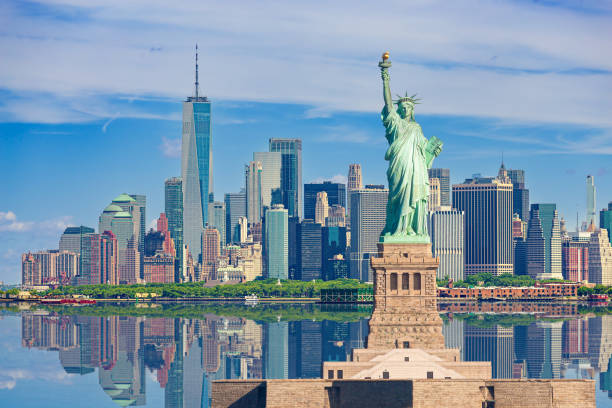

New York, often called New York City (NYC),[b] is the most populous city in the United States. It is located at the southern tip of New York State on New York Harbor, one of the world's largest natural harbors. The city comprises five boroughs, each coextensive with its respective county. It is the geographical and demographic center of both the Northeast megalopolis and the New York metropolitan area, the largest metropolitan area in the United States by both population and urban area. New York is a global center of finance[11][12] and commerce, culture, technology,[13] entertainment and media, academics and scientific output,[14] the arts and fashion, and, as home to the headquarters of the United Nations, international diplomacy.[c] With an estimated population of 8,584,629 in July 2025,[5] distributed over 300.46 square miles (778.2 km2), New York is the most densely populated major city in the United States. New York City has more than double the population of Los Angeles, the country's second-most populous city.[20] Over 20.1 million people live in New York City's metropolitan statistical area[21] and 23.5 million in its combined statistical area as of 2020, both the largest in the U.S. New York City is one of the world's most populous megacities.[22] The city and its metropolitan area serve as the premier gateway for legal immigration to the United States. An estimated 800 languages are spoken in New York City,[23][24][25] making it the most linguistically diverse city in the world.[26][27] The New York City metropolitan region is home to the largest foreign-born population of any metropolitan region in the world, approximately 5.9 million as of 2023.

for more info click👆